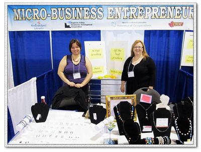

The Micro Business Development program is unique to our province, Newfoundland and Labrador. Our program uses small groups, called peer-lending circles, which bring together six to nine entrepreneurs and provide the information and support necessary to successfully start and run a micro-business. Many of these enterprises are home-based but several have grown to move into their own locations. Our groups meet monthly and share successes and challenges, act as sounding boards, and provide a business network for its members. Individual and group business counselling is available and we offer monthly professional development workshops with guest speakers. We can offer a small start-up loan of up to $2500 with successive loans of up to $10,000 to start or expand a new or existing micro-business.
We currently have two sites in the province; one in St. John's and one in Grand Falls-Windsor.
Micro lending Began in 1976 when Muhammad Yanus created the Grameen Bank in Bangladesh and by doing so Yanus became the “banker of poorest of the poor”. The first loan of just $35.00 was granted to a woman who wanted to make useful items from local materials and sell them at the small market near her village. This loan was quickly repaid and the woman’s business grew. This is when the term Micro-Credit first appeared. Unlike with regular commercial banking, no collateral was required. Then, as is still the case in our own lending circles, loans are based on mutual trust, accountability, group participation and creativity.
The Micro-Business Development Service was introduced in NL by the Newfoundland and Labrador Federation of Cooperatives in 1997 and was sponsored by HRSDC and delivered through various regional community economic development agencies.
The project began as a 15-month pilot and ran for 6 years. There were 7 delivery sites, over 500 clients, 51 peer-lending groups, and a total of 333 loans administered totaling nearly $500,000. The program ended in 2003 due to lack of funding.
Since 2003, NLFC had been looking for an opportunity to re-instate a micro-lending program and in 2007 began to explore possibilities of a new program with the provincial department of Industry, Business and Rural Development. Financing was identified through Poverty Reduction Initiatives in 2008 and in August of that year the current Micro-Business Development Program began.